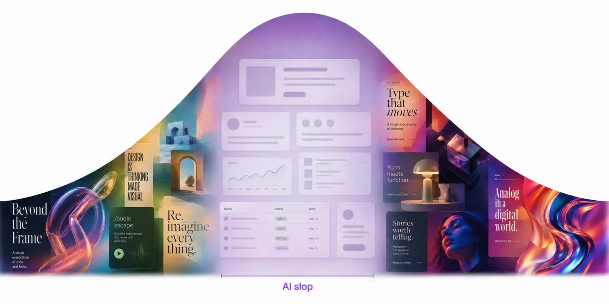
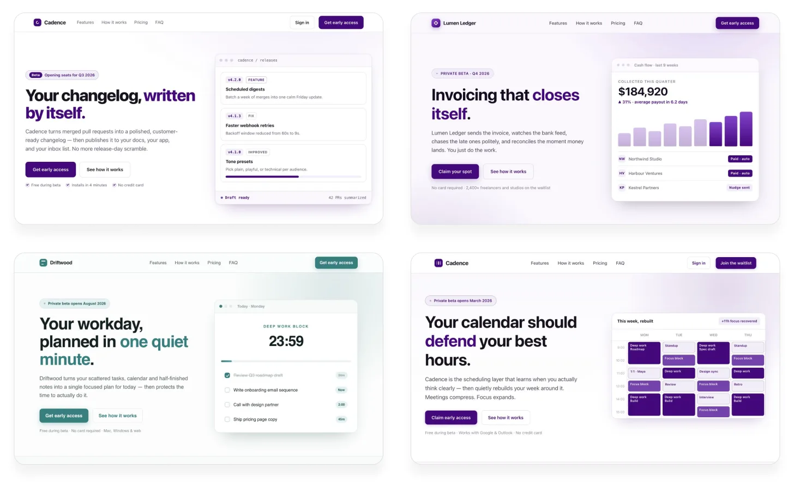
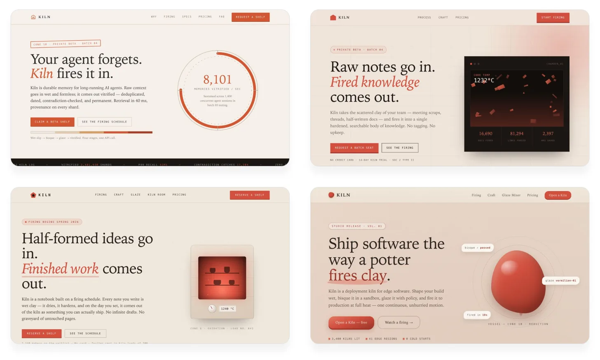
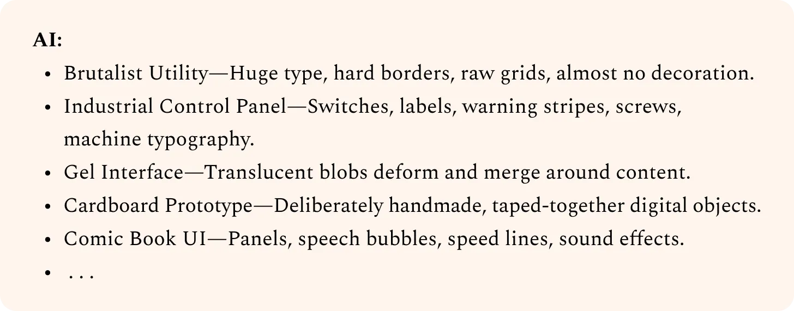
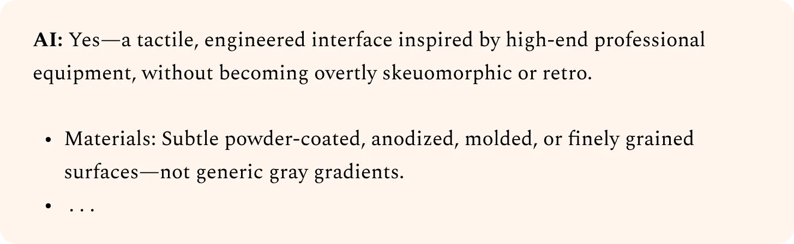
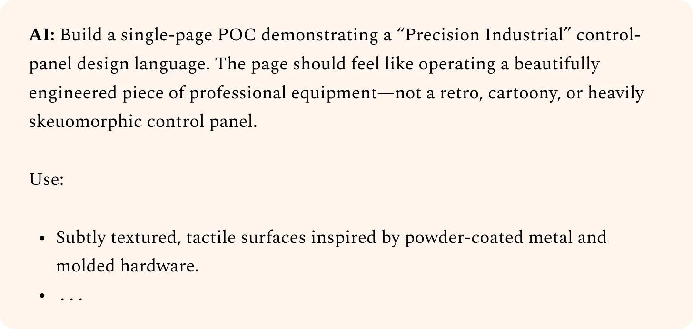
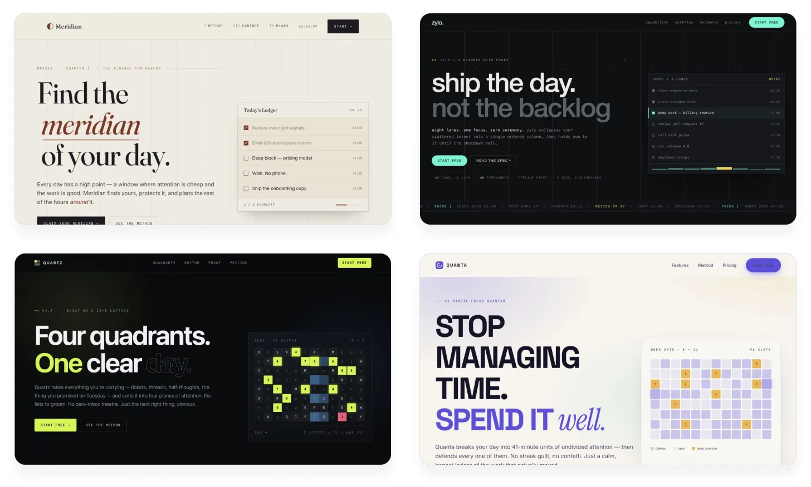
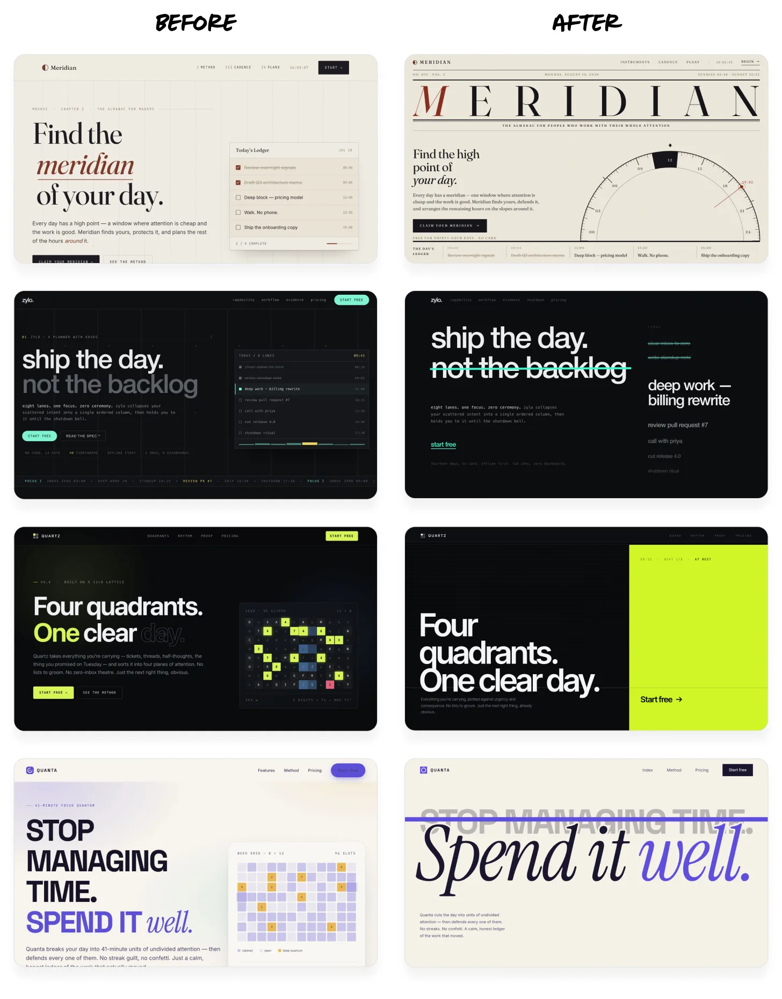
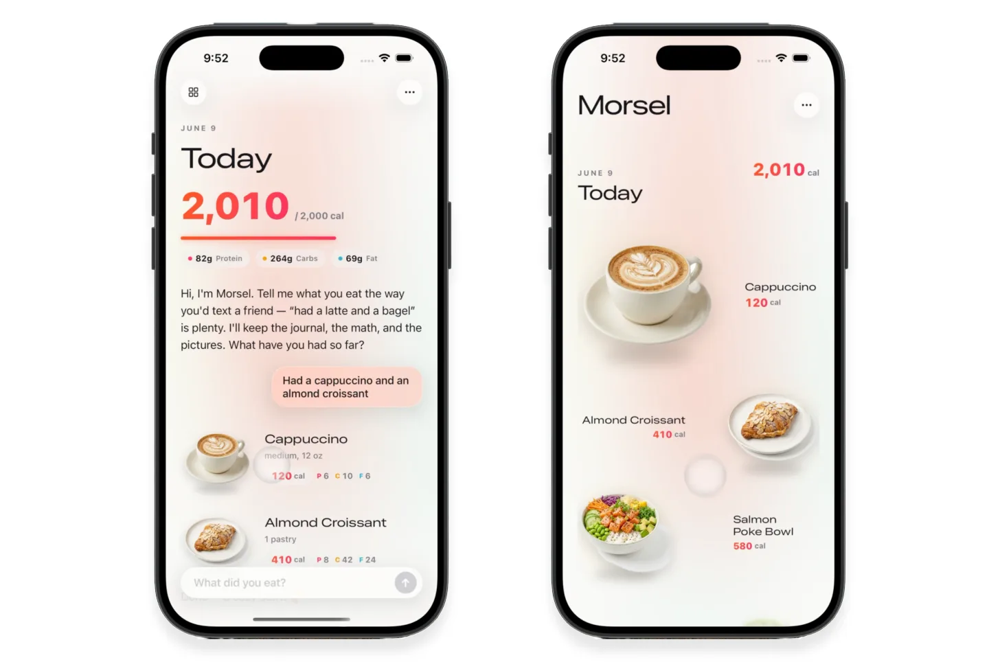
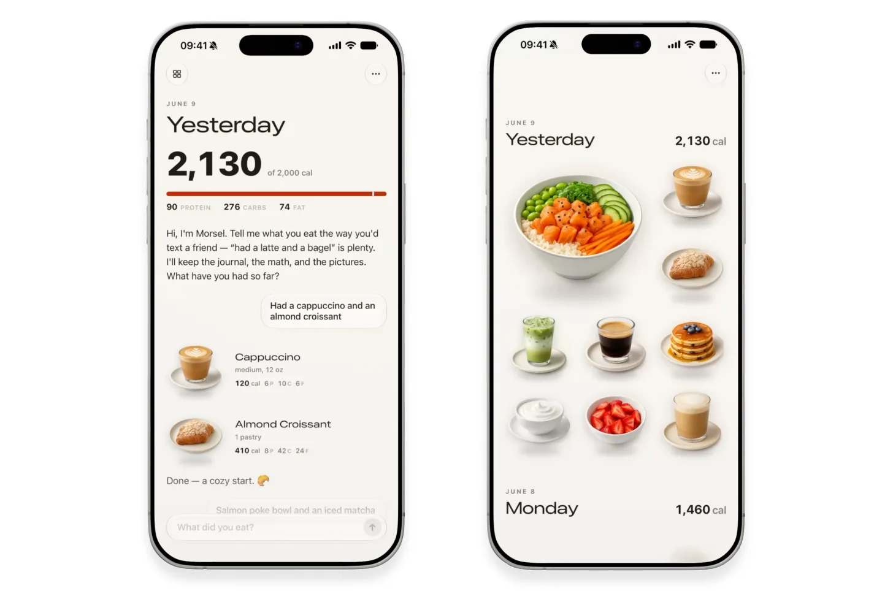

把 AI 调教成世界级设计师
Anshu Chimala 的 7 个 prompt 技巧,让 Claude 做出真有人味的视觉
给 AI 设计师的实战手册:从「给我一个独一无二的 landing page」到把 Claude 调教成有审美的合作伙伴。原文 13 段 prompt,逐字保留 + 中文意译。
原文配图 · Anshu Chimala · Lenny's Newsletter · 2026/09/01 · Calorie Tracker · Claude Fable 5 · 3 prompts
关于作者。Anshu Chimala(@anshuc)是 Lenny's Newsletter 的客座作者,也是 YC 校友创办人,在 Apple 干了 12 年先后带软件工程和设计两支团队。他最近半年密集拿 AI 工具做产品设计,把这套方法论系统化成本文。
这篇讲什么。如果你只用「给我做一个 landing page」这种 prompt 调教 AI,出来的设计一定是千篇一律的渐变 + 大字 + 圆角。Anshu 提出一个简单框架:把设计当成「发现 → 定义 → 交付」的 Double Diamond 流程跑一遍,每阶段配一个特定的 prompt 技巧,AI 的产出就能从「像 AI 做的」变成「像有人味的」。
为什么值得读。全文 13 段 prompt,全部逐字收录在文中,你可以直接复制到自己 Claude / Cursor / 任意 coding agent 上试。Anshu 在 Apple 的设计团队把这些 prompt 反复验证过,不靠 vibe,靠流程。
怎么读。建议先看三大 hero demo 感受目标质量,再读「为什么 AI 设计总是平庸」找到根因,然后按 Discover → Define → Deliver 三阶段对照自己的产品跑一遍。文末 Technique 7 起为原文付费内容,本篇未收录。
Three things a world-class AI designer can do today
这三件,是你读完这套 prompt 后 AI 就能做出来的
Anshu 没用假 demo 凑数,这三个成品都是真的「用 1-3 段 prompt 让 AI agent 一把做出来」的产物,运行时长不到一小时。它们不是「AI 设计的极限」,而是「读完本文你能达到的下限」。
原文配图 · Anshu Chimala · Lenny's Newsletter · 2026/09/01 · Space Exploration Game · Claude Opus 5 · 2 prompts
原文配图 · Anshu Chimala · Lenny's Newsletter · 2026/09/01 · Dynamic Landing Page · Claude Opus 5 + GPT-5.6 Sol · 3 prompts
calorie tracker 那个最让我意外——它是 Anshu 在 Apple 内部做的一个真实 demo,AI 做了完整的对话式交互 + 动画转场 + 数据可视化,质量直接逼近 Linear / Notion 那种级别的产品 demo。
Why AI designs always look... bland
为什么 AI 做的设计总是一眼能看出来是 AI 做的
如果你让 10 个不同人用同一句「给我做一个 productivity app 的 landing page」去问 AI,你会得到 10 个几乎一样的设计:居中大字 + 柔和渐变 + 圆角卡片 + 模糊背景 + emoji 装饰。这是「AI 风格」(AI aesthetic)——一种没有个性的、统计学意义上最常见的、训练数据平均值的视觉。
Anshu 给了一个很有穿透力的解释:LLM 不「想」做设计,它「拟合」做设计。当你只给它一个模糊的目标,它就从训练数据里找「最不冒犯、最多人见过」的方案——那就是平庸。
根因不是模型不够聪明,是prompt 太宽。你需要把设计过程拆成几个阶段,每个阶段给一个窄任务 + 强约束,才能让 AI 跳出「平均值陷阱」。

原文配图 · Anshu Chimala · Lenny's Newsletter · 2026/09/01 · 人类设计师会先探索设计空间,AI 默认直接选最常见的答案 · 概念示意
「LLM 不「想」做设计,它「拟合」做设计。给它一个模糊目标,它就从训练数据里挑「最不冒犯、最多人见过」的那个——那就是平庸。」
— Anshu Chimala,本文核心论点
The design loop, reframed for AI agents
把设计师的 Double Diamond 流程,改造成 AI agent 能跑的工作流
设计行业有个经典框架叫 Double Diamond:先发散(Discover)→再发散(Define)→再聚合(Develop)→再交付(Deliver)。Anshu 把它精简成三阶段,每个阶段配一组 prompt 技巧,刚好对应 AI agent 的工作方式。
Discover · 发现:让 AI 大范围探索风格可能性,而不是直接锁定一个平庸解。技巧 1-2。
Define · 定义:把探索出来的好方向,收敛成一个有自己品味的具体方向。技巧 3-5。
Deliver · 交付:把定义好的方向,做到工作室级别的质量。技巧 6。
每阶段都有特定 prompt 技巧。Anshu 的 7 个技巧里,前 6 个覆盖了完整三阶段——本文也只讲这 6 个,Technique 7 起为付费内容,本篇不收录。
Discover · 先广后深
让 AI 大范围探索风格可能性,而不是直接锁定一个平庸解
Vary the style radically
让风格剧烈变化
「直接要随机」是个常见的误区。Anshu 试过,效果很差——AI 解「随机」的方式是从训练数据的分布里再抽样一次,得到的还是中位数。
真正有效的办法是给 AI 一个具体的随机锚点。Anshu 用的是 Sakana AI 的一个叫 String Seed of Thought 的技巧:先让 AI 用 shell 生成一串随机字符,然后让 AI 从这串字符里「看出」模式、子结构、特殊数字——再基于这些具体信号去定义方向。
这一步的目的是把 AI 从「我能想到的所有 design language 选一个最安全的」,推到「我必须基于这个具体的随机种子,推导出非标准的方向」。
对比样本:同一个 productivity app landing page
下面的三张图,用同一个目标「productivity app 的 landing page」,分别跑三种 prompt。baseline(几乎所有 AI 都长这样)、「直接要随机」(依然平庸)、String Seed of Thought(走出了不一样的方向)。

原文配图 · Anshu Chimala · Lenny's Newsletter · 2026/09/01 · 基线 prompt 产出 · 标准的「AI 风」design

原文配图 · Anshu Chimala · Lenny's Newsletter · 2026/09/01 · 「直接要随机」 prompt 产出 · 依然平庸

原文配图 · Anshu Chimala · Lenny's Newsletter · 2026/09/01 · String Seed of Thought prompt 产出 · 出现了截然不同的方向
Pick a unique direction (and own it)
挑一个独特方向,然后把它做透
Discover 阶段的下一步:在生成一批完全不同的方向后,挑一个最不像「AI 风格」的方向,然后把所有精力压上去。
这一阶段 Anshu 给的三组 prompt 都遵循同一个结构:一个具体到位的视觉比喻 + 明确的功能要求。这不是「给我一个酷的设计」,而是「给我一个具体的、别人没做过的设计」。
下面三个例子都是同一个 productivity app,但视觉比喻完全不同——像素游戏风 / 等距 3D 城市 / 极端不对称风。Anshu 用 Claude Opus 5 跑出来的实际效果:
原文配图 · Anshu Chimala · Lenny's Newsletter · 2026/09/01 · 像素艺术风 · 每一屏像电子游戏静帧
原文配图 · Anshu Chimala · Lenny's Newsletter · 2026/09/01 · 等距视角 3D 活城市 · 不同功能用街区/建筑表达
原文配图 · Anshu Chimala · Lenny's Newsletter · 2026/09/01 · 极端不对称 · 打破所有规则但依然好看
把方向变成可执行 prompt:三步 idea system
挑完方向后,Anshu 用三段 prompt 把它收敛成一个具体可执行的 brief。第一段:让 AI 自己 brainstorm 一堆可能性(发散)。第二段:把 brainstorm 结果对照你自己的品味,挑一个具体方向。第三段:把这个方向写成一个 AI agent 能直接拿去 build 的 prompt。
这三段 prompt 是连续对话链,不是单独扔出去。

原文配图 · Anshu Chimala · Lenny's Newsletter · 2026/09/01 · Step 1 · 让 AI 大范围列方向 · 发散

原文配图 · Anshu Chimala · Lenny's Newsletter · 2026/09/01 · Step 2 · 用自己的品味收敛到「工业控制面板」

原文配图 · Anshu Chimala · Lenny's Newsletter · 2026/09/01 · Step 3 · 把方向写成可执行的 build prompt
Define · 收成有品味的具体方案
把挑出来的方向,做出工作室级别的质量

原文配图 · Anshu Chimala · Lenny's Newsletter · 2026/09/01 · 回顾:Discover 阶段输出的多个方向
Make it tall
做长一点,做高一点
「AI 风」设计最致命的特征是短——一屏、几张卡片、一个 CTA 就完了。真实世界的好产品从来不是一屏就说清楚的。
Anshu 的做法:让 AI 设计一个至少 5-8 屏的长滚动页面,每一屏有明确的叙事功能(hook → problem → solution → proof → CTA)。这一招逼着 AI 跳出「单屏元素组合」的套路,被迫讲一个完整故事。
从下图的 before / after 可以看到,「做长」不只是物理上加内容,而是强迫 AI 在每一屏做出有节奏感的设计。

原文配图 · Anshu Chimala · Lenny's Newsletter · 2026/09/01 · 「做长」前 vs 「做长」后 · 同主题
上面这段 prompt 是整个 Define 阶段最关键的一段——它引入了一个 subagent 当 design critic。做法是:对当前设计截图 → 在全新 context 里调一个 Fable 5 subagent,只给它截图(不给实现细节、不给之前的迭代记录)→ 让它从「顶级设计工作室会怎么执行这套美学」的角度给反馈 + 打分 → 分数 ≥ 9/10 才算完成。
Anshu 在 Apple 的设计团队就是这么迭代的——多一双陌生的眼睛,而且这双眼睛被刻意训练成「最挑的那个」。
Make it animate
让它动起来
「静态好看」和「动态好看」是两个完全不同的设计问题。AI 默认只会做静态——因为它的训练数据绝大多数是截图。
Define 阶段的下一步是给静态设计注入个性。Anshu 的做法是用图像生成给关键元素加 shader / 3D 效果 / 异常的光影,让画面从「平面设计」变成「有质感的视觉」。
下面是四组 before / after 对比——同主题,左静态、右加图像生成:每组都能看到「平」变「立体」的关键转折。
原文配图 · Anshu Chimala · Lenny's Newsletter · 2026/09/01 · Before / After · 静态 vs 加图像生成 A
原文配图 · Anshu Chimala · Lenny's Newsletter · 2026/09/01 · Before / After · 静态 vs 加图像生成 B
原文配图 · Anshu Chimala · Lenny's Newsletter · 2026/09/01 · Before / After · 静态 vs 加图像生成 C
原文配图 · Anshu Chimala · Lenny's Newsletter · 2026/09/01 · Before / After · 静态 vs 加图像生成 D
注意上面 prompt 里 Anshu 特别强调了「在浏览器里逐帧确认」——shader 和 3D 效果很容易做出截图好看但运行掉帧的东西,必须真的在浏览器里跑起来看。
Make it interactive
让它能交互
Define 阶段的最后一步:用视频生成把静态 / 动效元素升级成「能响应滚动、悬停、状态切换」的真实交互。
Anshu 给的两个示例分别是:1) 把一张静态水晶图换成一段循环播放的「玻璃折射 + 旋转」视频; 2) 做一个行李箱 demo,让滚动驱动视频过渡——空中悬浮 → 落地弹开 → 内容落入箱中。
原文配图 · Anshu Chimala · Lenny's Newsletter · 2026/09/01 · 玻璃水晶折射 · 静态图换成循环视频
原文配图 · Anshu Chimala · Lenny's Newsletter · 2026/09/01 · 行李箱 · 滚动驱动的视频过渡
这两个例子的共同特点是:视频不是装饰,而是替代了原本的静态元素。Anshu 强调要选一个物理表现强、帧间一致性好的模型(他用的是 Seedance 2.5),并且要做「种子帧衔接」——上一段视频的最后一帧,作为下一段的起始帧,才能形成无缝滚动体验。
Deliver · 交付前最后一刀
把 AI 风的设计,收敛成真有人味的成品
Ship it, but dial back the AI tells
发布,但把 AI 风的小动作收一收
Define 阶段做出来的版本,通常会有明显的「用力过猛」感——配色太饱和、3D 效果太炫、动画太多。这是 AI 设计师的「过度补偿」,因为它知道自己在做设计、想要显得「有设计感」。
Deliver 阶段的关键:做减法。把那些「一眼就是 AI 加的」装饰元素逐个拿掉,只留下真正服务于内容的设计。
下面两张是 Anshu 那个 calorie tracker 例子:左是定义阶段的全功能版,右是交付前砍了一刀的「收」版——看起来更克制、更接近真人设计师会做出来的成品。

原文配图 · Anshu Chimala · Lenny's Newsletter · 2026/09/01 · Deliver 阶段初版 · 全功能、用力过猛

原文配图 · Anshu Chimala · Lenny's Newsletter · 2026/09/01 · 砍掉 AI 风小动作后的版本 · 更克制、更有人味
Anshu 提了一个有用的判断标准:「如果一个真人设计师做这个,他会加这个元素吗?」如果答案是「不会」,那就拿掉。这条规矩在交付阶段筛掉了 60-80% 的「AI 加的」元素。
Technique 7 起为原文付费内容,本篇未收录
本文覆盖的 6 个技巧 + 13 段 prompt,已经是一套完整的「从 Discover 到 Deliver」工作流。原文自 Technique 7 起进入付费区,主题是「Remove AI tells」——系统性地识别并拿掉 AI 设计的常见痕迹。如果你需要这部分内容,请前往 原文链接 订阅支持 Anshu。
SOURCES & CREDITS
引用与原文出处
-
ORIGINAL ARTICLE
How to turn your AI into a world-class designer
作者:Anshu Chimala ([@anshuc](https://x.com/anshuc)) · 发布于 2026/09/01 · 客座发布于 Lenny's Newsletter (Lenny Rachitsky)
原文链接:https://www.lennysnewsletter.com/p/how-to-turn-your-ai-into-a-world - AUTHOR · X https://x.com/anshuc
- METHOD · STRING SEED OF THOUGHT Sakana AI — 让 LLM 从一段随机字符串里「看到」结构、再用作创意的种子,本文 Technique 1 的核心方法。
- INTERPRETATION 本文为解读版本,按中文阅读习惯重排。原文中所有 prompt 模板均保留英文原貌;中文版为意译,便于理解「为什么这么写」,而非直接翻译字面。如需引用或实际使用,请以原文英文为准。
使用建议:这 13 段 prompt 不是越通用越好用——Anshu 的方法论核心是「把 prompt 写成具体的设计约束 + 明确的工作流」,而不是「给我一个最好的 prompt」。复制后建议先在自己的产品上跑一遍 Discover 阶段(技巧 1-2),感受一下 baseline 和 String Seed of Thought 的差距,再决定要不要走到 Define。
「LLM 不会自己变成设计师。
但给它一段好的 prompt,它可以变成一个 9/10 设计师的实习生。」
— Anshu Chimala,2026/09/01